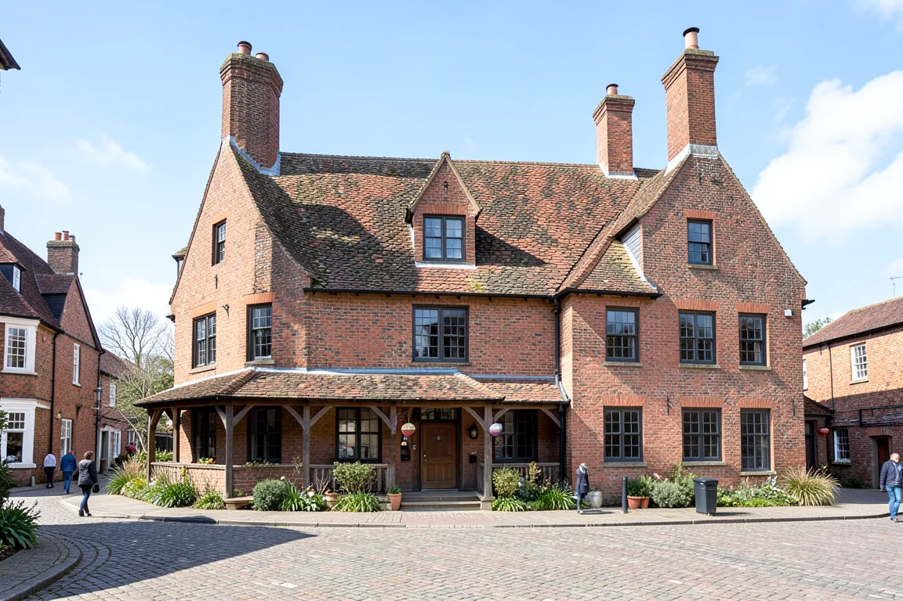

архитектура · 1859–1914 · также: Движение Arts and Crafts, Домашнее возрождение (Domestic Revival), Свободный стиль (Free Style)
Дома, построенные честным ремеслом из местного кирпича, дуба и черепицы. Уэбб, Войзи и Бейли Скотт планировали изнутри наружу и позволяли крутым крышам, глубоким крыльцам и ручной работе показывать, как построен дом.

Главная идея
Здание должно быть сделано умелыми руками из местного материала, спланировано для жизни внутри, а его конструкцию нужно видеть и ей наслаждаться.
Принципы дизайна
Планируйте от комнат наружу: размещайте каждую комнату по её использованию и свету и позволяйте плану решать фасад.
Берите местный кирпич, камень, дуб и глиняную черепицу и показывайте стыки, нагели и следы инструмента.
Накрывайте дом крутой крышей 45–55 градусов с глубокими свесами 0,4–0,8 м и высокими трубами.
Группируйте створчатые окна в деревянных рамах с мелкими свинцовыми переплётами по 2–4 створки.
Помещайте глубокое крыльцо или камин-нишу (inglenook) 1,5–2,5 м как сердце входа и дома.
Делайте фурнитуру вручную: щеколды, петли, плитку и встроенные лавки как часть проекта.
Антипаттерны
Фабричный орнамент, наложенный на гладкую стену
Идеальная симметрия и классический портик
Большие окна из цельного стекла без переплётов
Гладкая штукатурка, скрывающая кирпич и дерево
Плоские крыши и тонкие парапеты
Машинно обработанный камень с острыми ровными рёбрами